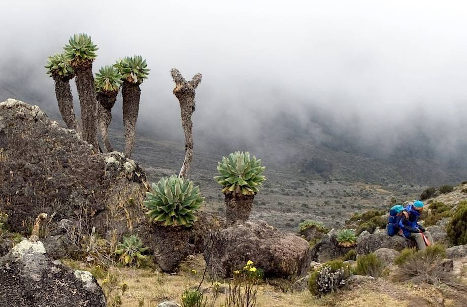
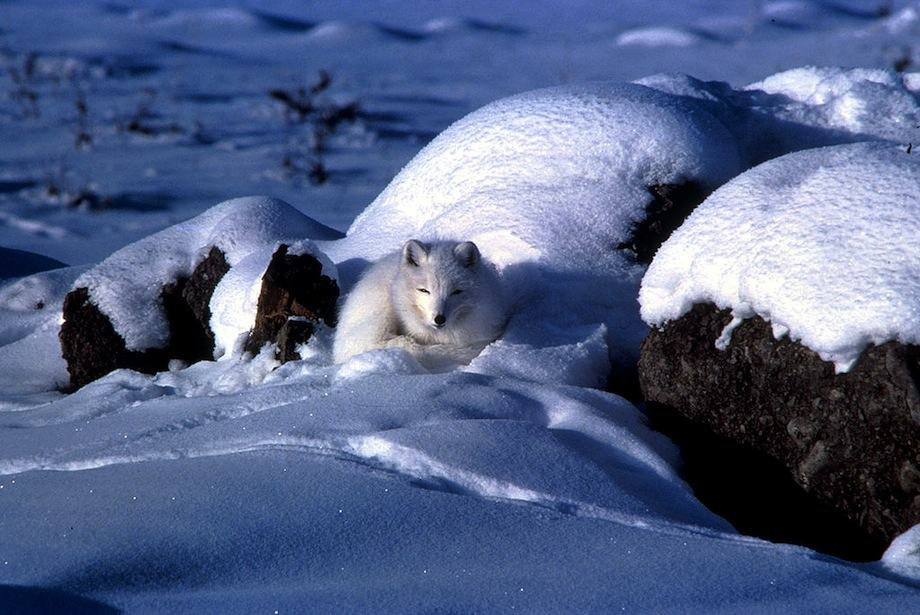
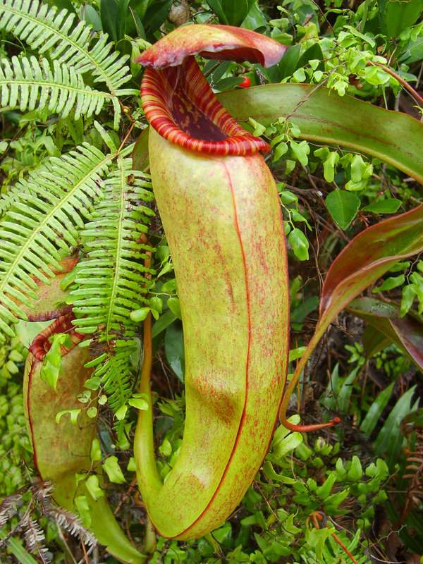

All living things need to use matter from their surroundings, such as food and water, to sustain themselves. Animals need air for oxygen. Plants need air for carbon dioxide, which is essential for photosynthesis; plants also need sunlight for photosynthesis
The biological make-up of all living things – animals, plants and microbes such as bacteria – is designed to help them survive and reproduce. Their adaptations are the tools they use to compete with others for available resources.
Living things can be found in every region of the Earth: in blazing hot deserts, in the freezing cold polar regions, up high mountains and in deep oceans. The place where an animal or plant lives is its habitat.
The different conditions found in these habitats mean that living things have unique adaptations for these places. This explains the huge diversity of life on Earth. For example, the giant groundsel plant’s unique habitat is 3500 metres above sea level in the central African mountains:

The giant groundsel’s large surface area and thick fur-like covering protect it from freezing nights on Mt. Kilimanjaro
Surface-area-to-volume ratio: The ratio of surface area to volume of an animal or plant drops as its size increases: the larger the animal or plant, the smaller the surface area to volume ratio. The lower the ratio, the lower the rate of energy loss.
This ratio is important to many plants and animals: it explains why some that live in extreme cold, e.g. polar bears, are often large. Their surface area to volume ratio reduces as they get bigger; the larger they are, the slower their energy loss. A polar bear’s large size helps it maintain its internal energy, keeping it warm.
African elephants are very big and find it hard to stay cool in the heat. They have an adaptation that helps: flapping their large ears cools blood in the ears’ blood vessels; this cooler blood is then pumped around the rest of the body.
Adaptation in animals
Animals living in very cold habitats, such as polar bears, may have thick coats and plenty of fat (blubber) under their skin. These helps them to keep the cold out; the blubber is also a store of energy for the coldest months, when food is harder to find.
Animals living in hot dry habitats, e.g. camels, are often adapted to get most of their water from food. A camel’s thick coat insulates it from the heat: the opposite job to a polar bear’s coat, which keeps heat in.
Many animals are camouflaged to blend into their surroundings. This makes it difficult for predators – or prey – to see them. Camouflaged animals may sit completely still when they sense danger, or to lie in wait.

Sitting quietly in the snow, this arctic fox cannot easily be seen by its prey. Conversely, its prey may also be difficult to see – the arctic hare, for example, which also has a white coat
Other animals such as some chameleons can change colour quickly. The Namaqua chameleon turns black to absorb heat in the chilly mornings of the Namib desert, and sandy-coloured to radiate heat away as the Sun hots up. This helps it maintain an ideal body temperature:
Animals may have special secretions to help them kill, or to defend themselves against attack. The venom in a viper snake’s bite immobilises its prey and also helps to digest it. The odour of rotten eggs released by a skunk is a defence against predators such as bears.
Adaptation in plants
Seagrass is highly adapted to living in a salty environment: it is the only plant that lives underwater and produces flowers, fruits and seeds. It often has strong roots that resist ocean currents, while the grass itself is highly flexible and wafts freely.
Seagrasses are adapted to obtain nutrients from sea water and from the sediments that float in it. However, in periods of thick atmospheric cloud cover, and/or currents that are laden with excessive sediment, seagrasses’ ability to photosynthesise may reduce.
Seagrasses live comfortably in shallow salty seas, using direct sunlight for photosynthesis, like land grasses
Cacti are highly adapted desert plants that need to retain water as much as possible:
Their cylindrical or round shape gives them the highest possible surface-area-to-volume ratio, keeping them cool and reducing water loss.
They often obtain water from the ground from shallow, wide root systems that take full advantage of occasional bursts of desert rain.
Their ‘leaves’ are spines with a tiny surface area, reducing water loss.
Their waxy smooth exterior also reduces water loss.
Even some plants are carnivorous! The southeast Asian pitcher plant eats insects to supplement nutrients that are not easily found in local soils. Its prey are attracted by the colourful lipped entrance and an alluring scent. The plant drowns the insects in an acidic liquid inside its long ‘pitcher’.

This bokorensis pitcher plant is just one of more than 100 known species. The lid closes in the rain to prevent the plant’s acidic liquid trap from diluting